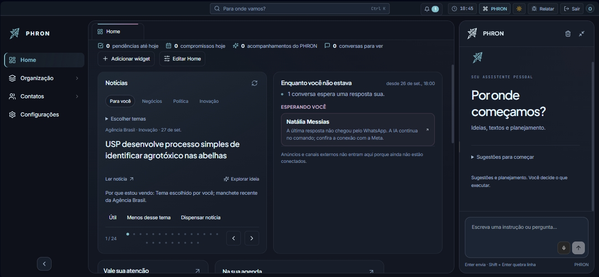
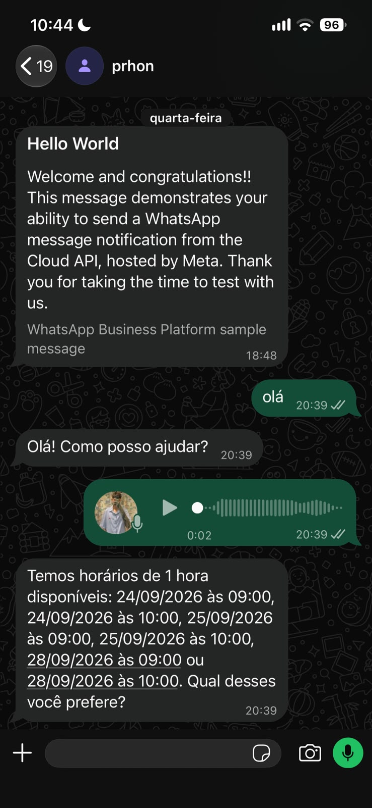

Contextos reconhecíveis
A navegação lateral mantém os caminhos disponíveis enquanto o conteúdo do espaço de trabalho muda. O usuário não precisa voltar a uma tela inicial para se orientar.
Produto digital
Um lugar para dar forma à rotina.

AmpliarO ponto de partida
Trabalho, vida pessoal e estudo dividem a mesma rotina. O PHRON parte desse encontro: um espaço que reúne diferentes contextos sem exigir uma interface inteiramente nova para cada um.
A tela apresentada aproxima três áreas: navegação, espaço de trabalho e assistente. O projeto é pessoal e continua em construção; o recorte aqui é a interface local, em modo noturno.
A navegação lateral mantém os caminhos disponíveis enquanto o conteúdo do espaço de trabalho muda. O usuário não precisa voltar a uma tela inicial para se orientar.
Widgets organizam o espaço central. A composição permite tratar a área de trabalho como algo que pode ser ajustado, não como um painel único e imutável.
O assistente ocupa uma coluna própria. A conversa e o conteúdo principal podem coexistir na mesma tela, preservando o contexto do que está sendo feito.

AmpliarDesenvolvimento
A implementação local usa Next.js e React, com componentes para navegação, espaço de trabalho e assistência. A separação acompanha a estrutura visual: cada área tem sua responsabilidade sem transformar toda interação em uma troca de página.
O modo noturno organiza navegação, widgets e conversa em áreas distintas. A Home e a conversa de WhatsApp apresentadas são capturas fornecidas por Iago em 27 de setembro de 2026.
O teste no WhatsApp mostra uma saudação, uma mensagem de áudio e uma resposta com horários disponíveis. Esse registro apresenta um recorte da integração, não uma validação de todas as capacidades do produto, que segue em desenvolvimento.